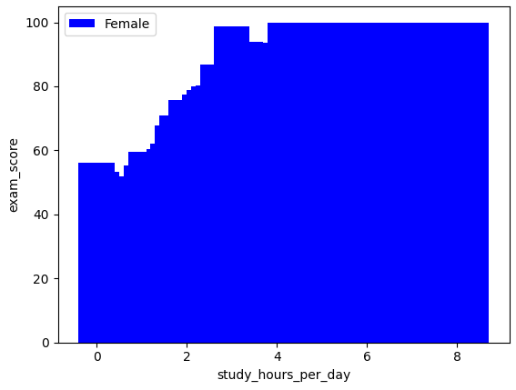

Explanation
Students habits performance analysis
Student habits performance analysis using mysql in python .
Data collection:
Student habits performance dataset (1000 data) collected from kaggle.
Data handle:
Pandas to read the dataset using python.
Data store:
Mysqlconnetor to connect the python then create database,create tables
Data detalis:
student_id,age ,gender,parental_education_level,
study_hours_per_day,social_media_hours,netflix_hours,part_time_job,attendance_percentage ,sleep_hours,diet_quality,exercise_frequency,internet_quality,mental_health_rating,
extracurricular_participation,exam_score then insert data to mysql.
Data retrive:
SQL query to retrieve data also streamlit ui for visual understand.
Result

Students who are spend more times in the studies ,they are got 100% exam score and mostly female at top scoreres.
streamlit web app for clear visual:
Retrieve the data about students

Conclusion
In this project,help to the education organization for student habits of daily routine and their background works to impack of their exam scores.